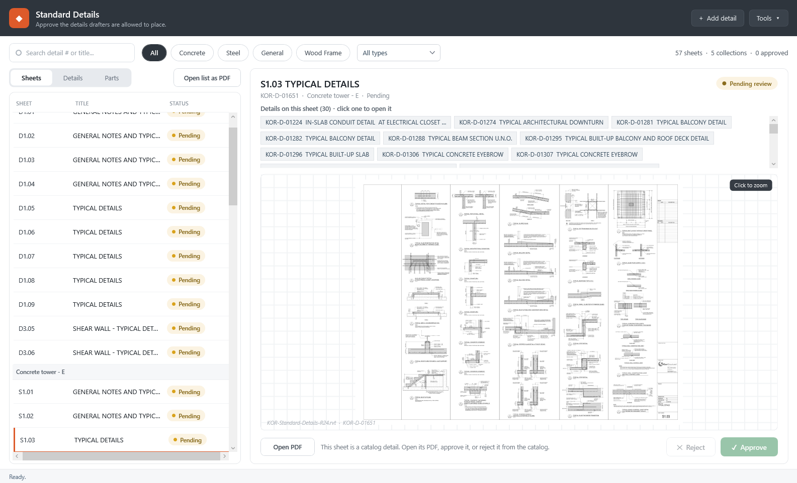

Sheets tab, S1.03 selected. Left: the sheets under their collection. Right: the sheet as Nelson's master prints it, and the 30 details on it.
1Find a cover sheet
- Open KOR Operations → Standard Details.
- Click Sheets (top left, beside Details and Parts).
- Pick a collection: Concrete tower E, E1, D or Wood frame E1, D.
2Look at it
- Click the sheet. Its drawing shows on the right.
- Click the drawing to zoom, or Open PDF for the full sheet.
3Go to a detail on it
- Under the sheet's title: Details on this sheet.
- Click one. The app opens it in Details with its own drawing.
4Before the demo
- This is the new build. The app installed on staff PCs today shows an empty Sheets tab.
- Releasing the new build is your call.
Measured on 30 Oct
- 57 of 57 sheets in the catalogue, one entry each; 688 of 688 entries have a drawing.
- 0 of 57 sheet drawings print another firm, another job or a placeholder (the office's term list). Printed with the clean title blocks.
- 57 of 57 sheets are full or flush right. 5 are part-filled; each sits as far right as its family's full sheets.
- Left out until Nelson places them: S4.02, S5.05, S6.01, Sx.x2.
One question for Jim
"Top to bottom, right to left": down columns, or along rows? Nelson's master does both: 39 of 57 sheets read in columns, 14 in rows (the shear-wall sheets among them). New sheets use columns until he says.